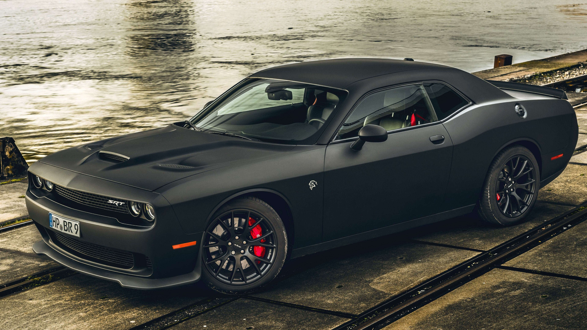
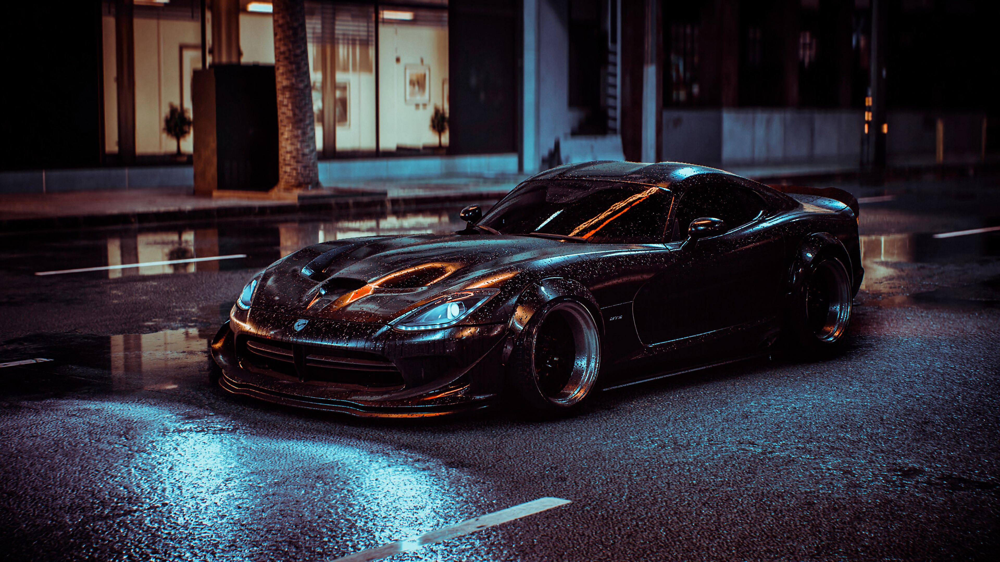

Dodge Challenger е името на три различни поколения автомобили,
произведени от американския автомобилен производител Dodge. Въпреки това, първото използване на името Challenger от Dodge е през 1959 г.
за пускане на пазара на "стойностна версия" на пълноразмерния Coronet Silver Challenger. От моделните години 1970 до 1974, първото поколение пони
автомобил Dodge Challenger е произведено с помощта на платформата Chrysler E в каросерии с твърд покрив и кабриолет, споделящи основните компоненти
с Plymouth Barracuda. Второто поколение, от моделните години 1978 до 1983, е проектирано с емблема Mitsubishi Galant Lambda / Sapporo, версия купе
на икономичен компактен автомобил. Третото и настоящо поколение е пони автомобил, който беше представен в началото на 2008 г. първоначално като
съперник на еволюиралото пето поколение Ford Mustang и петото поколение Chevrolet Camaro. През ноември 2021 г. Stellantis обяви, че моделната година
2023 ще бъде последната моделна година както за LD Dodge Charger, така и за LA Dodge Challenger, тъй като компанията ще фокусира бъдещите си планове
върху електрически превозни средства, а не върху превозни средства, задвижвани с изкопаеми горива, особено с по-високи автомобилни емисии стандарти
за въвеждане и изискване от Агенцията за опазване на околната среда за моделната година 2023.

Dodge Charger е модел на автомобил,
предлаган на пазара от Dodge в различни форми в продължение на седем поколения от 1966 г. насам.
Първият Charger беше шоу кола през 1964 г. Концептуален автомобил Charger II от 1965 г. приличаше на
серийната версия от 1966 г. Dodge Charger е създадено на три различни платформи в различни размери.
В Съединените щати табелката с името Charger се използва при средно големи пони автомобили, мускулни автомобили
и лични луксозни купета, както и при субкомпактни хечбеци;
а настоящият Charger е седан с четири врати в пълен размер.

Dodge Viper е спортен автомобил, произведен от Dodge (от SRT за 2013 и 2014 г.),
подразделение на американския производител на автомобили FCA US LLC от 1992 г. до 2017 г.,
след кратка пауза през 2007 г. и от 2010 до 2012 г. Производство на двуместния спортен автомобил
започва в New Mack Assembly Plant през 1991 г. и се премества в Conner Avenue Assembly Plant през
октомври 1995 г. Въпреки че Chrysler смята да прекрати производството поради сериозни финансови проблеми,
на 14 септември 2010 г. тогавашният главен изпълнителен директор Серджо Маркионе обяви и визуализира нов модел
на Viper за 2012 г.[3] През 2014 г. Viper беше обявен за номер 10 в списъка "Най-американските автомобили", което означава,
че 75% или повече от частите му са произведени в САЩ.[4] В крайна сметка Viper беше спрян от производство през 2017 г., след
като бяха произведени приблизително 32 000 през 26-те години на производство. Времето за ускорение от 0 до 60 мили/ч (97 км/ч)
на Viper варира от около 3,5 до 4,5 секунди. Максималната скорост варира от 160 мили в час (260 км/ч) до над 200 мили в час (320 км/ч),
в зависимост от варианта и годината.
